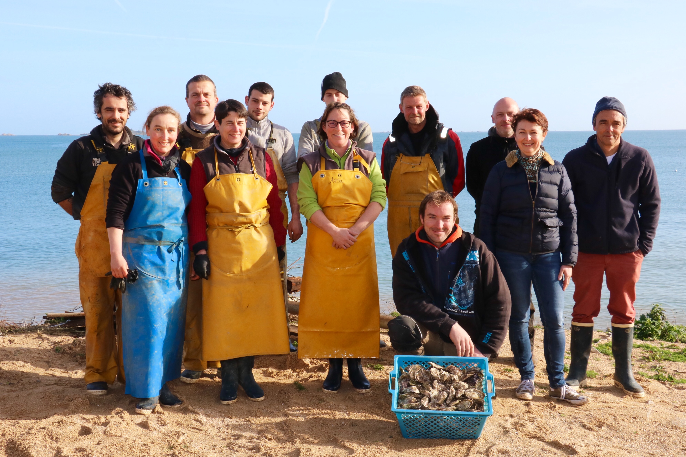
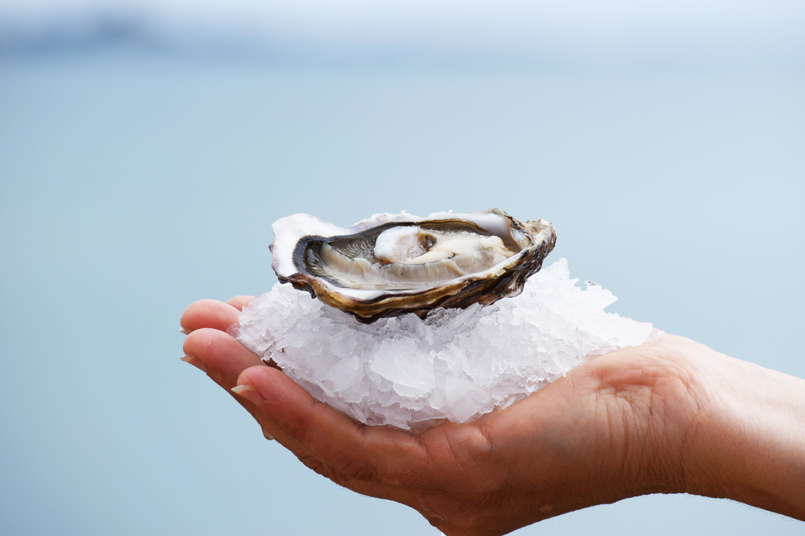
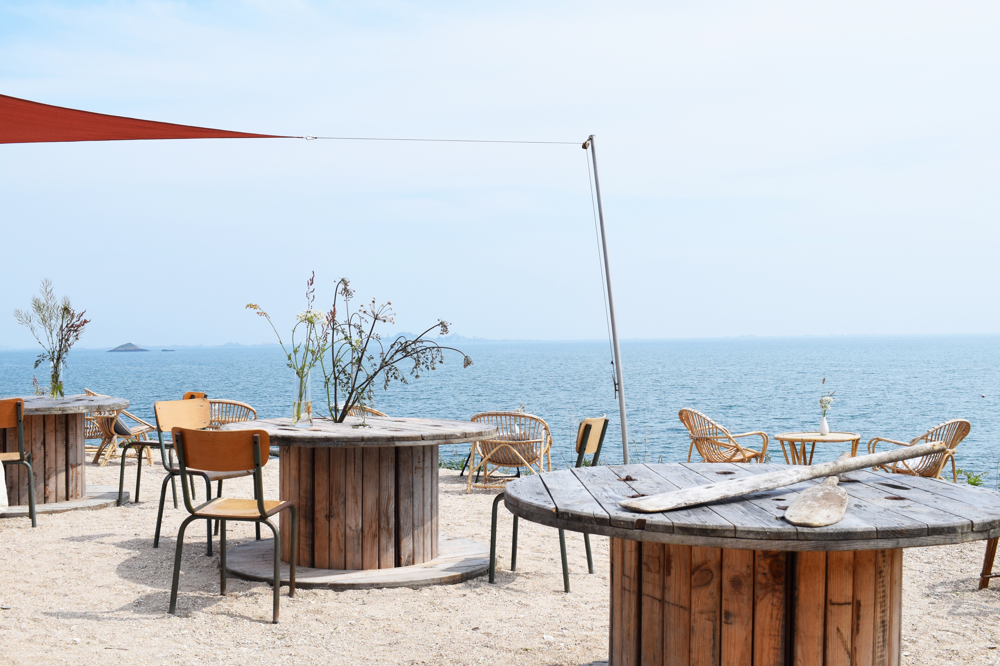

LA MAISON ARIN
Dans les années 40, le premier atelier de la famille Arin est installé sur l’île aux Œufs, en face de Sarzeau. En 1947, la famille pose les fondations de La Ferme Marine Paimpolaise à Paimpol sur la presqu'île de Kerarzic.
Notre histoire et nos valeursNOS HUÎTRES
Nous maîtrisons la culture de l’huître de la naissance jusqu’à sa commercialisation et travaillons selon le savoir-faire et les méthodes transmises par nos parents. Ainsi nous vous proposons un produit d'exception, au goût iodé unique.
Découvrir notre savoir-faire

LA BOUTIQUE
Retrouvez nos huîtres Arin, des palourdes, ainsi qu’une sélection de produits locaux d'épicerie autour du thème de la mer, choisis avec le plus grand soin pour leur qualité.
Découvrir les produitsLE BAR À HUÎTRES
De mai à septembre, la Ferme Marine Paimpolaise vous accueille en toute convivialité sur la pointe de Kerarzic, un site d’exception face à la baie de Paimpol. Un lieu où tradition et modernité s’unissent pour une dégustation tout en raffinement.
L'atmosphère du bar à huîtres